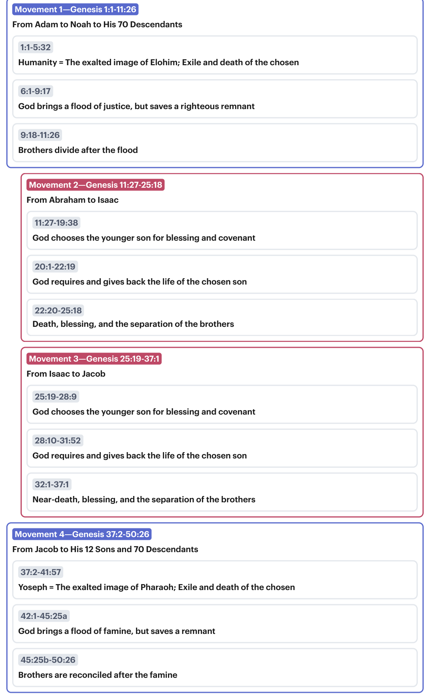
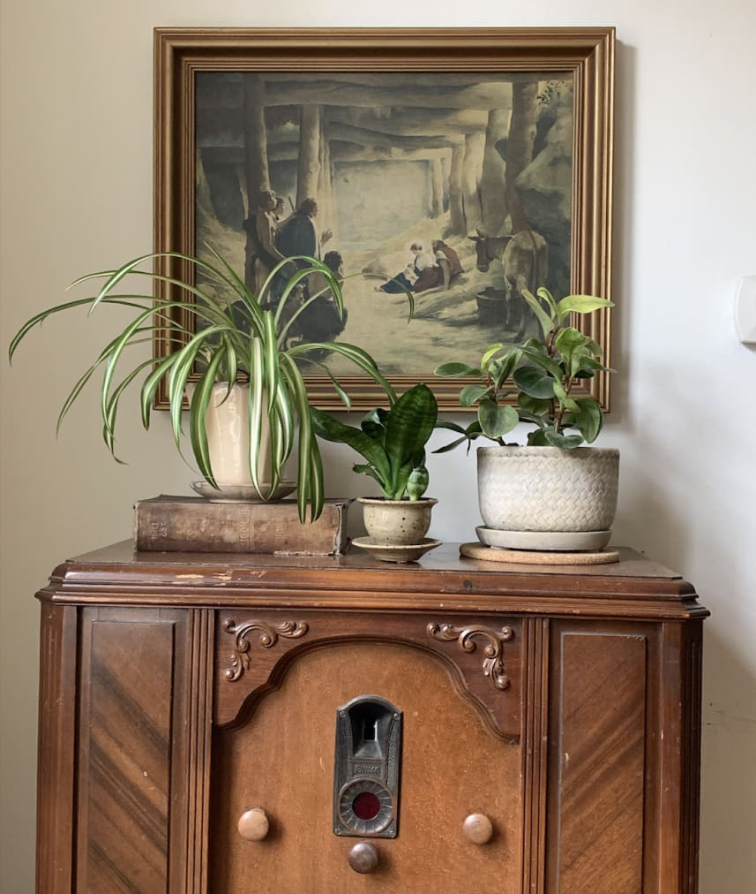

Sessão 3: A Forma da Literatura BíblicaSession 3: The Shape of Biblical Literature
Principais LiçõesKey Takeaways
- A Bíblia é literatura de meditação judaica antiga, habilmente elaborada de acordo com um conjunto de convenções de design que são desconhecidas para a maioria dos leitores modernos.The Bible is ancient Jewish meditation literature expertly crafted according to a set of design conventions that are unfamiliar to most modern readers.
- Os autores bíblicos constroem conexões e acrescentam camadas de significado ao elaborar essa literatura em conjuntos (mais comumente, conjuntos de três), de modo que possamos comparar e contrastar as diferentes seções de cada conjunto e ligá-las a outras.The biblical authors build connections and add layers of meaning by crafting this literature in sets (most commonly, sets of three) so that we can compare and contrast the different sections of each set and link to others.
- O design intrincado da literatura bíblica nos convida a desacelerar e meditar em seu significado, permitindo que ela nos molde ao longo de toda a vida.The intricate design of biblical literature invites us to slow down and meditate on its meaning, allowing it to shape us over a lifetime.
O Design Literário de Gênesis 1-50The Literary Design of Genesis 1-50

Gênesis 1-50. Tradução e Design Literário por Tim Mackie para BibleProject Classroom: José (2022).Genesis 1-50. Translation and Literary Design by Tim Mackie for BibleProject Classroom: Joseph (2022).
Embora cada parte do rolo de Gênesis seja modelada segundo partes anteriores, há uma rede de vocabulário e temas compartilhados entre esses quatro grandes movimentos que indica um arranjo simétrico em larga escala.While every part of the Genesis scroll is patterned after earlier parts, there is a network of vocabulary and themes that are shared between these four larger movements that indicate a large-scale symmetrical arrangement.
As Convenções-Chave de Design na Literatura BíblicaThe Key Design Conventions in Biblical Literature
Qual é o estilo literário único de comunicação usado pelos autores bíblicos?What is the unique literary style of communication used by the biblical authors?
A chave é encontrada na primeira unidade literária da Bíblia Hebraica (Gn. 1:1-2:3).The key is found in the first literary unit of the Hebrew Bible (Gen. 1:1-2:3).
Mas antes de irmos até lá, precisamos nos lembrar de algumas das categorias básicas de simetria e design que encontramos na poesia hebraica. Elas nos fornecem os axiomas básicos da literatura bíblica em geral.But before we go there, we need to remind ourselves of some of the basic categories of symmetry and design that we find in Hebrew poetry. These provide us with the basic axioms of biblical literature in general.
O trabalho dos estudiosos do "Texture Seminar" é fundamental aqui.The work of the "Texture Seminar" scholars is foundational here.
- David Andrew Teeter, em seu ensaio "Biblical Symmetry and Its Modern Detractors", um artigo apresentado na International Organization for the Study of the Old Testament de 2019.David Andrew Teeter, in his essay, "Biblical Symmetry and Its Modern Detractors," a paper delivered at the 2019 International Organization for the Study of the Old Testament.
- David Andrew Teeter e William Tooman, "Standards of (In)coherence in Ancient Jewish Literature", em Hebrew Bible and Ancient Israel, vol. 9 (2020), pp. 94-125.David Andrew Teeter and William Tooman, "Standards of (In)coherence in Ancient Jewish Literature," in Hebrew Bible and Ancient Israel, vol. 9 (2020), pp. 94-125.
Mas primeiro, um aparte sobre a "cognição analógica".But first, an aside on "analogical cognition."
A cognição humana é construída sobre um processo aprendido de agrupar, comparar e contrastar todo o estímulo sensorial que chega até nós.Human cognition is built on a learned process of grouping, comparing, and contrasting all the sensory input that comes our way.
Isto é como aquilo, aquilo é como isto // Isto não é como aquilo, aquilo não é como istoThis is like that, that is like this // This is not like that, that is not like this
Uma das maneiras mais básicas de apresentar uma comparação ou contraste significativo é colocar duas ou três coisas lado a lado e meditar em suas semelhanças ou diferenças.One of the most basic ways to present a meaningful comparison or contrast is to place two or three things next to each other and meditate on their similarities or differences.
Por exemplo, minha esposa agrupou três plantas sobre um rádio antigo que usamos como prateleira decorativa ao lado da nossa mesa de jantar.For example, my wife has grouped three plants together on an old radio that we use as a decorative shelf by our dinner table.

©️ BibleProject©️ BibleProject
As características únicas de cada planta se tornam mais evidentes somente quando as comparamos e contrastamos umas com as outras.The unique features of each plant become more prominent only once we compare and contrast them to each other.
- Todas as três são verdes.All three are green.
- 1 e 2 têm vasos bege; 3 tem um vaso creme.1 and 2 have tan pots; 3 has a cream pot.
- 1 e 3 são grandes; 2 é pequena.1 and 3 are big; 2 is small.
- 1 e 3 estão elevadas; 2 não está.1 and 3 are elevated; 2 is not.
- 2 e 3 têm folhas mais grossas e arredondadas; 1 não tem.2 and 3 have thicker, rounded leaves; 1 does not.
- 1 e 3 têm folhas verdes claras e escuras; 2 tem folhas principalmente escuras.1 and 3 have light and dark green leaves; 2 has mainly dark leaves.
O efeito estético do arranjo depende da capacidade do observador de comparar e contrastar as relações entre as várias plantas. Quanto mais meditamos nessas relações, mais profundo é o discernimento que obtemos sobre cada uma.The arrangement's aesthetic effect depends on the viewer's ability to compare and contrast the relationships between the various plants. The more we meditate on these relationships, the deeper the insight we gain into each.
O ponto: O arranjo das plantas é intencional, simétrico e convida o observador a descobrir camadas mais profundas de discernimento sobre todas as três plantas ao compará-las e contrastá-las umas com as outras. A literatura bíblica é construída sobre esse princípio básico.The point: The arrangement of the plants is intentional, symmetrical, and invites the viewer to discover deeper layers of insight into all three plants by comparing and contrasting them with one another. Biblical literature is built on this basic of principle.
Gênesis 1:1-2:3 é inteiramente organizado por esse princípio em todos os níveis de escala, desde o menor nível da linha e do arranjo de frases em parágrafos, até os maiores níveis de unidades literárias, seções, partes e movimentos que compõem o rolo.Genesis 1:1-2:3 is entirely organized by this principle on every level of scale, from the smallest level of the line and arrangement of sentences into paragraphs, up to the largest levels of literary units, sections, parts, and movements that make up the scroll.
Essa estrutura de design organizou Gênesis 1:1-2 em três partes, tendo o painel central duas linhas. Palavras repetidas ligam cada parte em uma rede de pares e simetrias que conduzem o leitor à meditação sobre suas relações.This design structure has arranged Genesis 1:1-2 into three parts, the center panel having two lines. Repeated words link every part together into a network of pairs and symmetries that lead the reader into meditation on their relationships.
- As linhas 1 e 2 mencionam "a terra", mas com nuances de significado diferentes.
A "terra" da linha 1 é usada na expressão "céus e terra". // A "terra" da linha 2 refere-se ao potencial da terra que está debaixo das águas do caos.Lines 1 and 2 mention "the land" but with different nuances of meaning.
Line 1 "land" is used in the phrase "skies and land." // Line 2 "land" refers to the potential of land that is underneath the chaos waters.
- A linha 2 consiste em duas linhas que emparelham uma variedade de imagens negativas, pré-criação.
"selvagem e vazio" = um deserto desolado
"escuridão" = a ausência de luz
"o abismo" = as águas abissais do caosLine 2 consists of two lines that pair together a variety of negative, pre-creation images.
"wild and waste" = a desert wasteland
"darkness" = the absence of light
"the deep" = the abysmal chaos waters
- As linhas 2 e 3 mencionam ambas "as águas", mas com palavras diferentes.
Linha 2: "o abismo" = as águas descontroladas do caos
Linha 3: "as águas" = as águas neutras sob a influência do Espírito de ElohimLines 2 and 3 both mention "the waters," but with different words.
Line 2: "the deep" = the uncontrolled, waters of chaos
Line 3: "the waters" = the neutral waters under the influence of the Spirit of Elohim
- As linhas 1 e 3 mencionam ambas Elohim de duas maneiras relacionadas, como criador e como Espírito que traz ordem.Lines 1 and 3 both mention Elohim in two related ways, as creator and as order-bringing Spirit.
A Função da Repetição e da Expressão Poética-SimétricaThe Function of Repetition and Symmetrical-Poetic Expression
Esse "falar em pares" cria oportunidades de usar múltiplas palavras e imagens para comunicar uma ideia central sob muitos ângulos. Esse tipo de estilo poético é uma maneira maravilhosa de expressar pensamentos complexos por meio do emparelhamento de palavras ou imagens, a fim de comunicar mais por meio da justaposição.This "speaking in pairs" creates opportunities to use multiple words and images to communicate one core idea from many angles. This type of poetic style is a wonderful way to express complex thoughts through pairing words or images in order to communicate more by means of the juxtaposition.
Os autores bíblicos desenvolveram um vocabulário para essa técnica chamada mashal.The biblical authors developed vocabulary for this technique called mashal.
Hebraico mashal (משל): comparação, analogia, provérbio.Hebrew mashal (משל): comparison, analogy, proverb.
"As linhas paralelas da poesia bíblica são como um par de binóculos. Alguns séculos atrás, as lentes de uma luneta eram montadas em cilindros que podiam ser deslizados para dentro e para fora, mas permaneciam em um único tubo. O vigia de um navio olhava através dele com um olho. A luneta de hoje é um binóculo: olhamos através de dois cilindros, com ambos os olhos, de modo que temos a vantagem de ver profundidade. Nossos olhos, com ou sem binóculos, veem 'em estéreo'. O efeito resulta do fato de que um olho tem um ângulo ligeiramente diferente do outro, e assim produz uma imagem minimamente diferente. Essas duas imagens são facilmente sobrepostas e reunidas em uma única imagem dentro do nosso cérebro. O paralelismo bíblico faz algo comparável: esse recurso poético cria duas imagens sutilmente diferentes com duas linhas que devem ser associadas por meio da expressão paralela. Ele nos oferece a oportunidade de considerar ambas as imagens separadamente, e depois deixá-las assentar juntas ... O ponto de similaridade entre duas linhas paralelas é a sua própria diferença! Somente aqueles que olham de perto e têm paciência descobrirão e saborearão o papel desempenhado pela dissimilaridade, suas surpresas e sua riqueza de significado."Fokkelman, J.P. (2001). Reading Biblical Poetry. Westminster John Knox Press. 78-79."The parallel lines of biblical poetry are like a pair of binoculars. Some centuries ago, the lenses of a field glass were set in cylinders that could be slid in and out, but they remained in a single tube. The lookout on a ship looked through it with one eye. Today's field glass is a binocular: we look through two cylinders, with both eyes, so that we have the advantage of seeing depth. Our eyes, with or without binoculars, see 'in stereo.' The effect results from the fact that one eye has a slightly different angle than the other, and so produces a minimally different image. These two pictures are easily superimposed and assembled into one image inside our brain. Biblical parallelism does something comparable: this poetic device creates two subtly different images with two lines that are to be associated through parallel expression. It allows us an opportunity to consider both pictures separately, and then let them sink in together ... The point of similarity between two parallel lines is their very difference! Only those who look closely and have patience will discover and savor the role played by dissimilarity, its surprises, and its richness of meaning."Fokkelman, J.P. (2001). Reading Biblical Poetry. Westminster John Knox Press. 78-79.
Pergunta de ReflexãoReflection Question
Como o rastreamento do design literário da Bíblia nos ajuda a meditar melhor em seu significado?How does tracing the literary design of the Bible help us better meditate on its meaning?